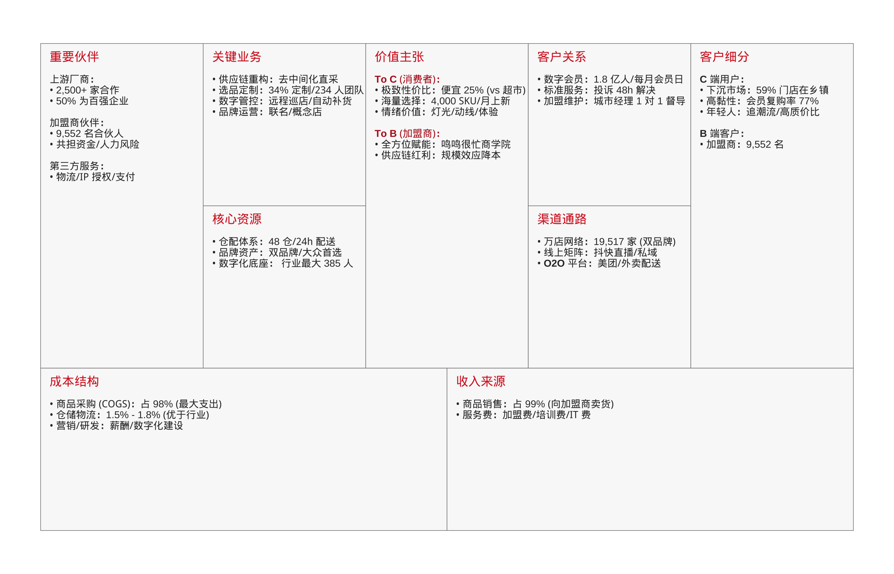

零食量贩龙头鸣鸣很忙
投研笔记
依托供应链重构实现极致性价比，通过数字化赋能的加盟体系，赚高周转卖白菜的钱。
重要免责声明
本文所述观点仅代表个人研究心得，不构成任何形式的投资建议。
中国消费者正从支付“品牌溢价”的迷思中苏醒，回归到更务实的极致质价比。鸣鸣很忙的崛起正是这一趋势的注脚。其爆发式增长不仅仅是资本催熟，更是高效率正在取代低效率。
1 商业模式概览
2 低毛利作为防御武器
在经典投资指南中，高毛利通常被视为企业拥有定价权和垄断力的标志。然而，鸣鸣很忙展示了另一种更为激进的生存哲学：通过极致让利换取规模，再用规模构筑壁垒。
鸣鸣很忙在 2022 年至 2024 年的毛利率稳定在 7.5% 至 7.6% 之间。这远低于通常认为的优质生意标准，但这恰恰揭示了其战略取舍：在一个完全竞争且价格敏感的市场中，通过直接向厂商采购并极简流通环节的“供应链重构”，实现了平均售价比线下超市便宜约 25% 的极致质价比。
这种“低毛利、高周转”的硬折扣模式，核心动力源于其变态级的运营效率——2024 年其存货周转天数仅为 11.6 天，远超行业平均水平。凭借这种效率优势，公司实现了规模的指数级扩张，2022 年至 2024 年收入年均复合增长率高达 203%。
作为 2024 年休闲食品饮料 GMV 计中国最大的连锁零售商，规模效应已显著转化为成本护城河。随着市场集中度的提升，其盈利弹性已初步显现：截至 2025 年 9 月 30 日止九个月，集团毛利率已进一步优化至 9.7%，经调整净利润同比大增 240.8%。这种规模带来的供应链红利释放，让其增长具备了极强的确定性。
3 从“吞噬现金”到“制造现金”
资深投资人常说：“利润只是观点，现金才是事实。” 鸣鸣很忙的现金流变迁，生动展示了一家高速扩张企业的惊险一跃。
在 2024 年，尽管净利润看似健康的 8.29 亿元，但经营性现金流净额却是赤字 (-2.30 亿元)，导致自由现金流 (FCF) 为负的 -3.96 亿元。这并非经营不善，而是为了支持门店网络的极速扩张：公司把大量现金变成了给供应商的预付款和仓库里的存货。
转折点出现在 2025 年。截至 9 月 30 日，经营性现金流净额由 2024 年底的负值飙升至 21.89 亿元，在扣除约 2.30 亿元的资本开支后，自由现金流强劲转正为约 19.59 亿元。这标志着商业模式的成熟：一旦门店网络铺设达到规模效应，企业凭借极高的周转效率（2024 年存货周转天数仅 11.6 天）以及预收加盟商货款带来的“浮存金”红利，展现出了强大的自我造血能力。
需要指出的是，虽然加盟商预付机制优化了流动性，但由于对上游供应商仍需大量预付且须维持庞大存货储备，集团目前仍处于“正营运资本”（流动资产净值 35.09 亿元）状态，还不具备严格意义上的负营运资本特性。
4 高周转带来的高回报
尽管利润率极薄，但管理层通过“资本效率”弥补了“内燃机”效率的不足。招股书未直接给出 ROIC，通过其存货周转天数仅 11.6天（2024年）可以推断鸣鸣很忙 2024 年的 ROE（净资产收益率）约 16%，这主要不是由净利率（2.1%）驱动，而是由高达 4.7 次的资产周转率驱动。这种模式意味着管理层将每一块钱的资本在一年内“转”了近 5 次，这种高频复利才是其对抗竞争的利器。
2025年前九个月的年化总资产周转率进一步提升至 5.7次 左右，显示出双品牌深度整合后，供应链效率及规模效应正在加速释放，让每一块钱资产带来的收入创下历史新高。2025 年前三季度净利润已达 15.59 亿元（超过 2024 全年）。随着 2025 年毛利率优化至 9.7%，预计 2025 年全年 ROIC 将出现跨越式增长。
5 价值创造还是价值毁灭
“收入涨 20%，存货涨 50%”是透支未来的毒药。观察鸣鸣很忙 2024 年数据：收入涨了 282%，存货从 6.32 亿涨到 16.74 亿（涨 165%）。存货增速显著低于收入增速，且贸易应收款项占比极低（主要为预付制），说明其增长并非靠“向渠道压货”堆砌，而是真实的终端需求驱动。
鸣鸣很忙因收购赵一鸣零食录得 22.50 亿元商誉。如果未来 ROIC < 资本成本，这笔高溢价并购将变成毁灭价值的“庞氏”遗留。2025 年前九个月的年化 ROIC（27.63%） 远高于估算的 WACC（约 10.66%）。目前看来，双品牌整合带来的 2025 年利润暴增显示这笔投入正在产生协同价值。
鸣鸣很忙在 2025 年交出了一份 “高 ROIC、低负债、高周转” 的成绩单。只要其能够维持 27% 以上的投入资本回报率，其增长逻辑在财务上就非常站得住脚，也具备极强的可持续性。
6 分析总结
鸣鸣很忙通过“硬折扣”模式，以低毛利为防御手段，构建了难以逾越的效率壁垒。它不仅仅是零食贩卖商，更是一家伪装成零售企业的“供应链效率机器”。通过去中间化直采和数字化赋能，公司将毛利率压低至 7.5% 左右，主动放弃定价权以换取极致的质价比和规模统治力。
财务上，公司已成功跨越“烧钱换规模”的危险期。2025 年自由现金流的强劲转正与 ROIC 的显著跃升，验证了其商业模式的自我造血能力。年化 5.7 次的超高资产周转率有效抵消了薄利的影响，证明了“高周转、低毛利、大规模”模型的可持续性。
在行业天花板（约 8-10 万家店）到来之前，鸣鸣很忙正利用双品牌整合带来的规模红利，进行饱和式攻击。投资鸣鸣很忙，本质上不在于博取品牌溢价，而是投资中国零售供应链的现代化改造，以及在存量竞争时代，唯有“效率”才能生存的朴素真理。